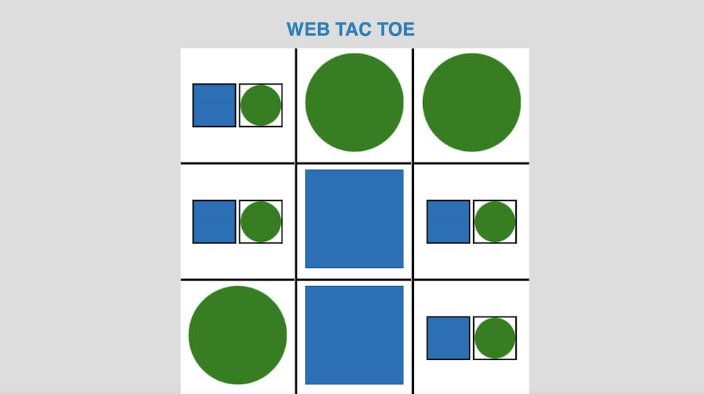
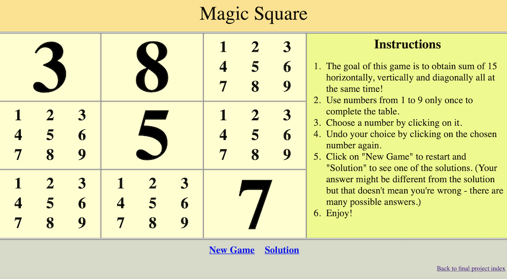
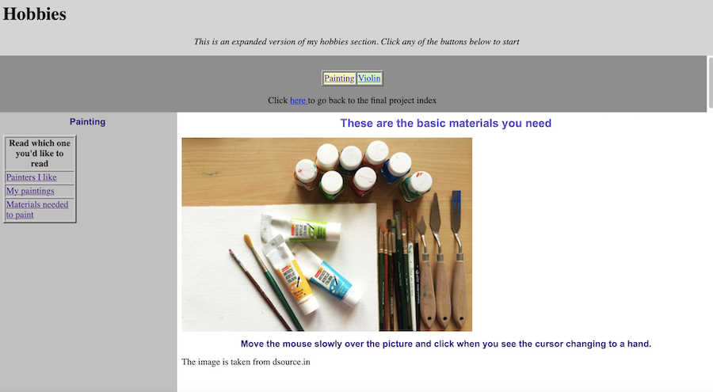

by Anthony Tanaka Messier, Minhui Roh, and Hajeong Seo
PRO-LMB Web Page Design Fall 2020
|  |
 |
 |
Here you can find a board to play the famous game of Tic-Tac-Toe, online! Play against your friends and the first one to get 3 of his shapes in a row wins!
(By:Anthony Tanaka Messier) |
This webpage provides a gameboard for Magic Square which consists of completing 3 x 3 table using numbers from 1 to 9 only once. The goal is to obtain sum of 15 horizontally, vertically and diagonally all at the same time.
(By: Minhui Roh) |
This an expanded version of the hobbies section created previously in the semester using image mapping, tables, and frames.
(By: Hajeong Seo) |
Introduction
Visual Code is a free coding editor that is beginner-friendly. It allows you to code in any programming languages including but not limited to Python, Java, and C++in one editor.
To begin using, you have to download the app from their website, https://code.visualstudio.com. Once it is downloaded, open the app. Click on the "explorer" tab.
If you already have a folder that you'd like to work in, click "open folder" and choose the folder. If you don't have a folder, you can click on "New file" to start coding.
Once you have a folder open, you can either create a file or a folder inside that folder. To create an html file, click on "New file" and type in the name of the file followed by the extension .html.
What not to do:
Don't forget to include the extensions when you're creating the file, either .html or .css. If you don't define the file format, then you would not be able to use certain features such as the automated closing brackets.
The features of the editor that were helpful, user-friendly, efficient:
- Closing tags are automated
- Easy to read because it automatically organizes the tags
a. If a tag is within a tag, the tag inside is automatically indented
b. The editor automatically differentiates the tag and the attributes
- Allows you to open the pub folder, and it's easy to access the sub-folders
- Minimizes typos when making a link to another file. When you type =" , it shows a list of files you can link to.
- When using a colour, it shows a list of possible colours that you can choose from
- You can select the same words (including same tags) in the document at the same time and change all of them at the same time using "change all occurrences"
- The different parts of the code are color coded. This feature makes it easier to locate yourself and to detect any errors within the lines of codes.
The features of the editor that could be improved or should be avoided:
- The tag <frame > is a one-shot tag, but the editor generates a closing tag. We tested with other one-shot tags, but others work fine.
- When I want to insert a tag in a text that's already written, it's tedious to remove the automatically produced closing tag and put it in the right place.
For example, if I already wrote the sentence, I read Harry Potter, and I want to italicize Harry Potter, the editor will automatically make the code I read <i> </i> Harry Potter. So, I would have to remove the </i > and place it in the right place myself.
- The files don't save automatically. If you're used to the automatic saving feature of TextEdit, you might accidentally close the file without saving.
- Things to add: having a feature that detects the typo.
Ex. If I type bgcolour, it would be helpful if the editor suggested changing it to bgcolor.
- If you download the application on mac OS, the application doesn't automatically appear inside the launchpad. You should browse through finder or use a searching feature to find the app.
Top
Back to final project index